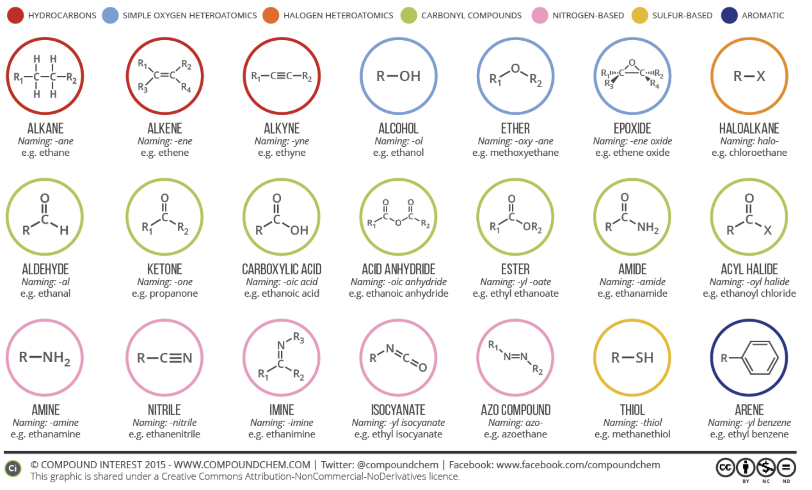

Knowing the vapor pressure of a molecule is not enough to predict its odor. Instead, we should take a look at the compound’s functional group. A functional group is an arrangement of atoms constituting a portion of a larger molecule. Often, these groups are responsible for a compound’s participation in certain pathways and chemical reactions.

Odorant groups that have the same functional group appear to have similar odor. A potential explanation of this is that the functional groups of odorant molecules bind in a similar way to olfactory receptors.
Molecules with the following functional groups tend to have similar odors –
Below are some highlights and fun facts pertaining to how certain functional groups relate to various odors!
Notice that all of these odorant molecules responsible for fruity and floral aromas contain an ester group.
Terpenes have been widely studied in recent years due to their presence in hemp/cannabis. They could potentially be exploited to generate pain therapies, but research into the area is ongoing.
A fishy odor is often attributed to amines. In general, this functional group is associated with extremely unpleasant scents.
Thiols are generally responsible for some pungent, unpleasant odors. However, some compounds with thiols are responsible for the smell of coffee and notes in wines like Sauvignon Blanc.
Functional groups can’t predict all odors. For example, the following three lactones in the visual below have very similar structures but extremely distinctive smells.
Enantiomeric compounds are compounds with the same structural connectivity, but different orientations in space. Enantiomers are often thought of as gloves for the right and left hands: extremely similar but not interchangeable, mirror images of each other. Only as few as 5% of enantiomer pairings have alike smell as shown in the figure below.
Moreover, structurally different compounds can also have similar odors such as the musk compounds found in the visual below.
Most importantly, small structural changes in a molecule can also decrease odor intensity/detectability significantly.